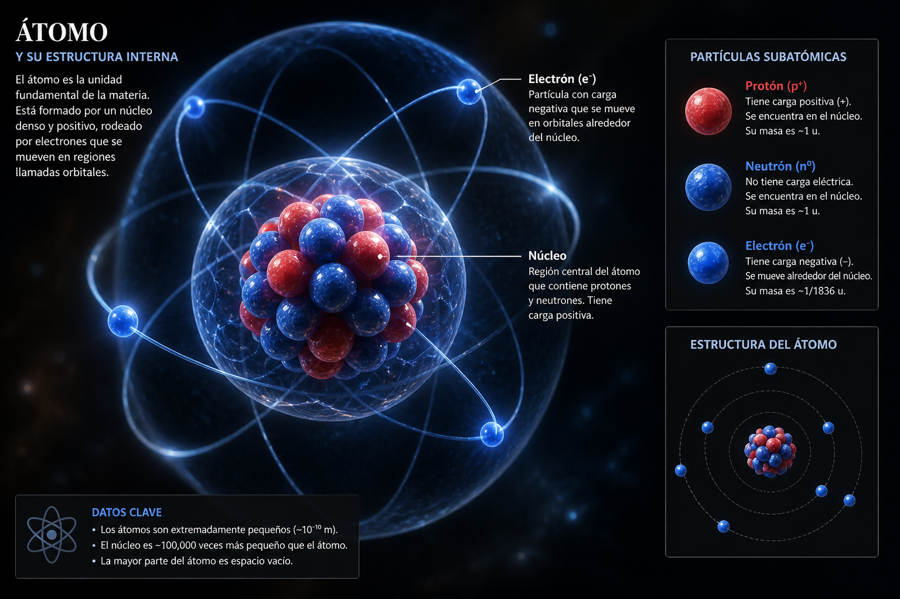
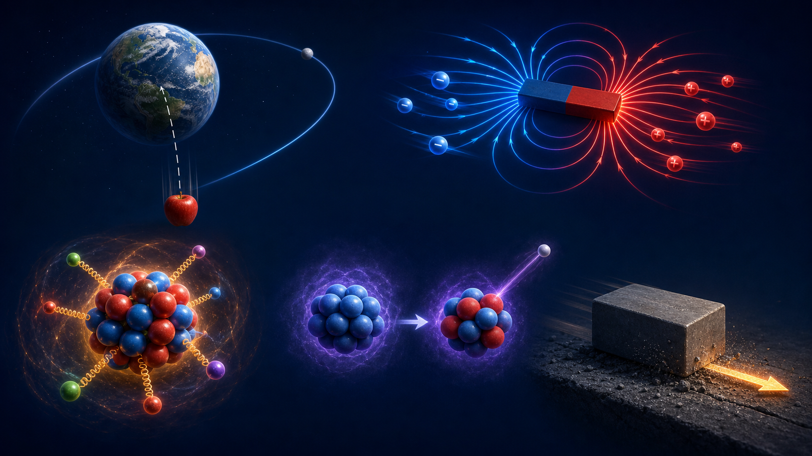
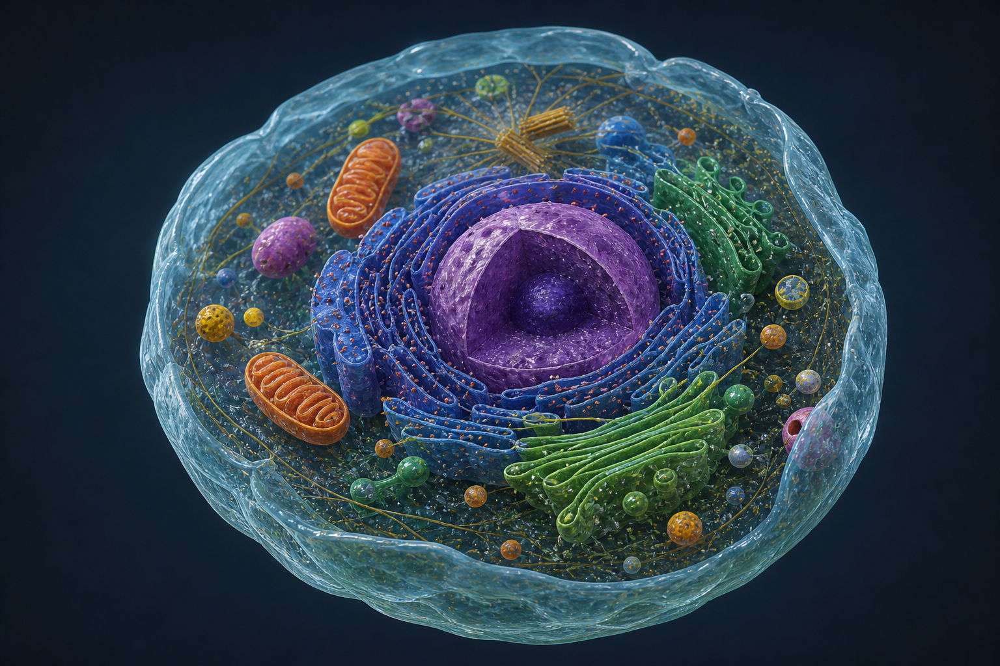
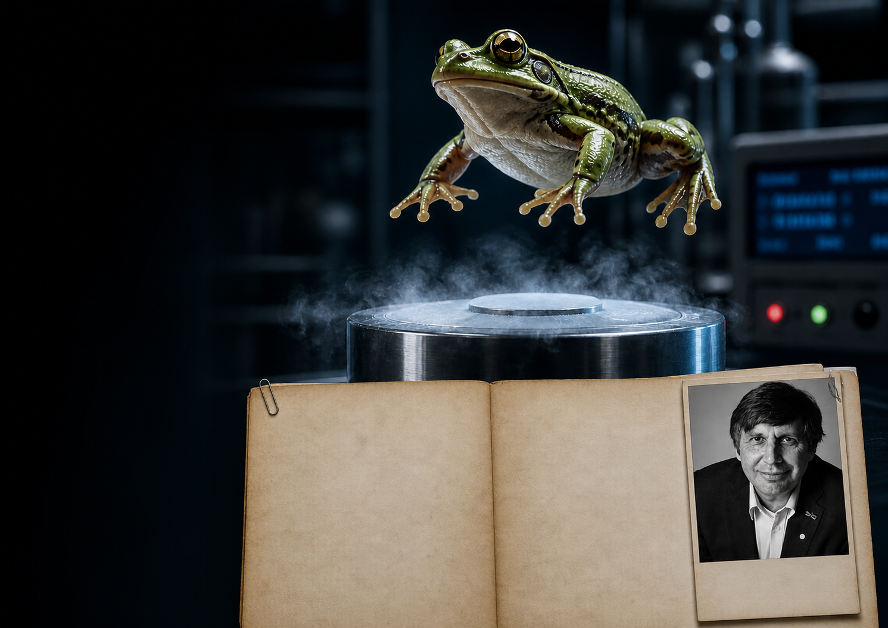

<!DOCTYPE html>
<html lang="es" class="scroll-smooth">
<head>
  <meta charset="UTF-8">
  <meta name="viewport" content="width=device-width, initial-scale=1.0">
  <title>Ciencias Naturales — 1° Año</title>
  <script src="https://cdn.tailwindcss.com"></script>
  <script src="https://code.iconify.design/3/3.1.0/iconify.min.js"></script>
  <link href="https://fonts.googleapis.com/css2?family=Playfair+Display:ital,wght@0,400;0,500;0,600;0,700;0,800;0,900;1,400;1,500&family=Cormorant+Garamond:ital,wght@0,300;0,400;0,500;0,600;0,700;1,300;1,400&family=Inter:wght@300;400;500;600;700&display=swap" rel="stylesheet">
  <script>
    tailwind.config = {
      theme: {
        extend: {
          colors: {
            natura: {
              black: '#080C0A',
              dark: '#0E1410',
              gray: '#161C18',
              mid: '#242C28',
              silver: '#A8B5AD',
              silverLight: '#C8D4CC',
              silverDark: '#5A6B60',
              green: '#0D9488',
              greenLight: '#14B8A6',
              greenDark: '#0F766E',
              leaf: '#22C55E',
              water: '#38BDF8',
              energy: '#3B82F6',
              bio: '#DC2626',
              podcast: '#E8A87C', podcastDark: '#C47E3B',
            }
          },
          fontFamily: {
            heading: ['Playfair Display', 'Georgia', 'serif'],
            body: ['Cormorant Garamond', 'Georgia', 'serif'],
          }
        }
      }
    }
  </script>
  <style>
    * { margin: 0; padding: 0; box-sizing: border-box; }
    ::selection { background: #0D9488; color: #080C0A; }
    body { font-family: 'Cormorant Garamond', Georgia, serif; background: #080C0A; color: #D0D8D2; overflow-x: hidden; }


    ::-webkit-scrollbar { width: 6px; }
    ::-webkit-scrollbar-track { background: #080C0A; }
    ::-webkit-scrollbar-thumb { background: #0D9488; border-radius: 3px; }

    @keyframes fadeInUp {
      from { opacity: 0; transform: translateY(30px); }
      to { opacity: 1; transform: translateY(0); }
    }
    @keyframes fadeIn {
      from { opacity: 0; }
      to { opacity: 1; }
    }
    @keyframes marquee {
      0% { transform: translateX(0); }
      100% { transform: translateX(-50%); }
    }
    @keyframes pulse-glow {
      0%, 100% { box-shadow: 0 0 20px rgba(13, 148, 136, 0.3); }
      50% { box-shadow: 0 0 40px rgba(13, 148, 136, 0.6); }
    }

    .animate-fadeInUp { animation: fadeInUp 0.8s cubic-bezier(0.16, 1, 0.3, 1) forwards; }
    .animate-fadeIn { animation: fadeIn 0.6s ease forwards; }
    .delay-100 { animation-delay: 100ms; }
    .delay-200 { animation-delay: 200ms; }
    .delay-300 { animation-delay: 300ms; }
    .delay-400 { animation-delay: 400ms; }

    .marquee-track { animation: marquee 30s linear infinite; }
    .marquee-track:hover { animation-play-state: paused; }

    .glow-btn { animation: pulse-glow 2s ease-in-out infinite; }

    .hero-img {
      filter: grayscale(60%) contrast(1.2) brightness(0.6);
      transition: filter 0.7s ease;
    }

    .accent-line { width: 60px; height: 3px; background: linear-gradient(90deg, #0D9488, #14B8A6); }
    .stat-number {
      background: linear-gradient(135deg, #0D9488, #14B8A6);
      -webkit-background-clip: text;
      -webkit-text-fill-color: transparent;
      background-clip: text;
    }

    .unit-card {
      transition: all 0.35s ease;
      border: 1px solid rgba(255,255,255,0.06);
    }
    .unit-card:hover {
      transform: translateY(-6px);
      box-shadow: 0 24px 48px rgba(0,0,0,0.5);
    }

    .nav-link { position: relative; }
    .nav-link::after {
      content: ''; position: absolute; bottom: -2px; left: 0;
      width: 0; height: 2px; background: #0D9488;
      transition: width 0.3s ease;
    }
    .nav-link:hover::after { width: 100%; }
    .nav-link-quimica::after { background: #22C55E; }
    .nav-link-fisica::after { background: #3B82F6; }
    .nav-link-biologia::after { background: #DC2626; }
    .nav-link-revista::after { background: #8B5CF6; }
    .nav-link-podcast::after { background: #E8A87C; }
    .nav-link-esi::after { background: #14B8A6; }
    .nav-link-eai::after { background: #22C55E; }
    .nav-link-quiz::after { background: #14B8A6; }

    .mobile-menu {
      transform: translateX(100%);
      transition: transform 0.4s cubic-bezier(0.16, 1, 0.3, 1);
    }
    .mobile-menu.open { transform: translateX(0); }

    .revista-card {
      border: 1px solid rgba(139,92,246,0.15);
      transition: all 0.35s ease;
    }
    .revista-card:hover {
      border-color: rgba(139,92,246,0.4);
      transform: translateY(-4px);
    }

    .search-wrap { position: relative; z-index: 200; }
    .search-input {
      width: 100%; max-width: 480px;
      background: rgba(255,255,255,0.04);
      border: 1px solid rgba(255,255,255,0.08);
      padding: 14px 16px 14px 44px;
      color: #C8D4CC; font-family: 'Inter', sans-serif; font-size: 14px;
      border-radius: 6px; outline: none;
      transition: border-color 0.3s, background 0.3s;
    }
    .search-input:focus { border-color: rgba(13,148,136,0.4); background: rgba(255,255,255,0.06); }
    .search-input::placeholder { color: #5A6B60; font-size: 13px; }
    .search-icon { position: absolute; left: 14px; top: 50%; transform: translateY(-50%); color: #5A6B60; pointer-events: none; z-index: 101; }
    .search-results {
      position: absolute; top: calc(100% + 6px); left: 0; right: 0; max-width: 480px;
      background: #0E1410; border: 1px solid rgba(255,255,255,0.08);
      border-radius: 8px; max-height: 320px; overflow-y: auto;
      display: none; z-index: 9999; box-shadow: 0 16px 48px rgba(0,0,0,0.6);
    }
    .search-results.active { display: block; }
    .search-result-item {
      display: flex; align-items: center; gap: 12px;
      padding: 12px 16px; cursor: pointer;
      font-family: 'Inter', sans-serif; font-size: 13px;
      border-bottom: 1px solid rgba(255,255,255,0.03);
      transition: background 0.15s;
      text-decoration: none; color: #C8D4CC;
    }
    .search-result-item:last-child { border-bottom: none; }
    .search-result-item:hover { background: rgba(255,255,255,0.04); }
    .search-result-item .sr-unit-badge {
      font-size: 10px; font-weight: 700; letter-spacing: 0.1em;
      text-transform: uppercase; padding: 2px 8px; border-radius: 4px;
      white-space: nowrap; flex-shrink: 0;
    }
    .search-result-item .sr-name { flex: 1; }
    .search-result-item .sr-subhub { font-size: 11px; color: #5A6B60; margin-left: auto; }
    .search-no-results { padding: 16px; text-align: center; color: #5A6B60; font-family: 'Inter', sans-serif; font-size: 13px; }
    .search-shortcut { position: absolute; right: 14px; top: 50%; transform: translateY(-50%); font-family: 'Inter', sans-serif; font-size: 10px; color: #5A6B60; pointer-events: none; border: 1px solid #242C28; border-radius: 4px; padding: 2px 6px; }

    /* === Clima Widget === */
    @media (max-width: 767px) { #clima-widget { display: none; } }
    @keyframes sunSpin { to { transform: rotate(360deg); } }
    @keyframes dropFall1 { 0% { transform: translateY(0); opacity: 0.9; } 80% { transform: translateY(8px); opacity: 0; } 100% { transform: translateY(8px); opacity: 0; } }
    @keyframes dropFall2 { 0% { transform: translateY(0); opacity: 0.9; } 80% { transform: translateY(11px); opacity: 0; } 100% { transform: translateY(11px); opacity: 0; } }
    @keyframes dropFall3 { 0% { transform: translateY(0); opacity: 0.9; } 80% { transform: translateY(6px); opacity: 0; } 100% { transform: translateY(6px); opacity: 0; } }
    @keyframes lightningFlash { 0%,88%,92%,100% { opacity: 0; } 89%,91% { opacity: 1; } 90% { opacity: 0.3; } }
    @keyframes starGlow1 { 0%,100% { opacity: 0.3; } 50% { opacity: 1; } }
    @keyframes starGlow2 { 0%,100% { opacity: 0.6; } 35% { opacity: 0.15; } 70% { opacity: 1; } }
    @keyframes cloudShift { 0%,100% { transform: translateX(0); } 50% { transform: translateX(2.5px); } }

    @media print {
      body { background: white; color: black; }
    }
  </style>
  <link rel="stylesheet" href="assets/backgrounds/backgrounds.css">
  <link rel="stylesheet" href="assets/responsive-fixes.css">
  <script src="assets/backgrounds/auto-toc.js?v=6"></script>
</head>
<body>
  <script>
    (function () {
      var nav = performance.getEntriesByType && performance.getEntriesByType('navigation')[0];
      var isReload = nav ? nav.type === 'reload' : performance.navigation && performance.navigation.type === 1;
      if (isReload) window.location.replace('index.html');
  })();
  </script>

</body>
</html>

  <!-- Navigation -->
  <nav id="navbar" class="fixed top-0 left-0 right-0 z-50 transition-all duration-300" style="background: rgba(8,12,10,0.9); backdrop-filter: blur(12px);">
    <div class="max-w-7xl mx-auto px-4 md:px-6">
      <div class="flex items-center justify-between h-16 md:h-20">
        <!-- Logo -->
        <a href="index.html" class="flex items-center gap-2 group" aria-label="Volver a la presentación de Ciencias Naturales">
          <div class="w-8 h-8 bg-natura-green flex items-center justify-center rounded-sm">
            <span class="iconify text-natura-black" data-icon="lucide:leaf" data-width="18"></span>
          </div>
          <span class="font-heading font-bold text-lg tracking-wider text-white uppercase">Cs. Naturales</span>
        </a>

        <!-- Desktop Nav -->
        <div class="hidden lg:flex items-center gap-5">
          <a href="unidades/index.html" class="nav-link text-xs font-semibold uppercase tracking-[0.2em] text-natura-silver hover:text-natura-green transition-colors">Unidades</a>
          <a href="unidades/ciencia/index.html" class="nav-link text-xs font-semibold uppercase tracking-[0.2em] text-natura-silver hover:text-natura-green transition-colors">La Ciencia</a>
          <a href="#quimica" class="nav-link nav-link-quimica text-xs font-semibold uppercase tracking-[0.2em] text-natura-silver hover:text-natura-leaf transition-colors">Química</a>
          <a href="#fisica" class="nav-link nav-link-fisica text-xs font-semibold uppercase tracking-[0.2em] text-natura-silver hover:text-natura-energy transition-colors">Física</a>
          <a href="unidades/fisica/fuerzas/index.html" class="nav-link text-xs font-semibold uppercase tracking-[0.2em] text-natura-silver hover:text-natura-energy transition-colors flex items-center gap-1">
            <span class="iconify" data-icon="lucide:atom" data-width="13"></span>
            Las Fuerzas
            <span class="text-[8px] font-bold tracking-wider bg-natura-energy/20 text-natura-energy px-1.5 py-0.5 ml-1 rounded-sm">NUEVO</span>
          </a>
          <a href="#biologia" class="nav-link nav-link-biologia text-xs font-semibold uppercase tracking-[0.2em] text-natura-silver hover:text-natura-bio transition-colors">Biología</a>
          <a href="#revista" class="nav-link nav-link-revista text-xs font-semibold uppercase tracking-[0.2em] text-natura-silver hover:text-violet-400 transition-colors">Revista</a>
          <a href="podcast/index.html" class="nav-link nav-link-podcast text-xs font-semibold uppercase tracking-[0.2em] text-natura-silver hover:text-natura-podcast transition-colors">Podcast</a>
          <a href="esi.html" class="nav-link nav-link-esi text-xs font-semibold uppercase tracking-[0.2em] text-natura-silver hover:text-natura-greenLight transition-colors">ESI</a>
          <a href="eai.html" class="nav-link nav-link-eai text-xs font-semibold uppercase tracking-[0.2em] text-natura-silver hover:text-natura-leaf transition-colors">EAI</a>
          <a href="evaluaciones/bienvenida.html" class="nav-link nav-link-quiz inline-flex items-center gap-1.5 text-xs font-semibold uppercase tracking-[0.2em] text-natura-silver hover:text-natura-greenLight transition-colors">
            <span class="iconify" data-icon="lucide:circle-help" data-width="15"></span>
            Quiz
          </a>
          <a href="#recursos" class="nav-link text-xs font-semibold uppercase tracking-[0.2em] text-natura-silver hover:text-natura-green transition-colors">Recursos</a>
        </div>

        <!-- Mobile Toggle -->
        <div class="flex items-center gap-4">
          <span class="hidden md:inline text-[11px] font-semibold uppercase tracking-wider text-natura-silverDark">1° Año</span>
          <!-- Clima Buenos Aires -->
          <div id="clima-widget" class="md:flex items-center gap-1.5" title="Clima en Buenos Aires">
            <span id="clima-temp" class="text-[11px] font-semibold text-natura-silverLight" style="font-family:'Inter',sans-serif;min-width:28px;"></span>
            <div id="clima-svg" class="w-7 h-7 flex items-center justify-center"></div>
          </div>
          <button id="menuToggle" class="lg:hidden w-10 h-10 flex items-center justify-center text-white hover:text-natura-green transition-colors">
            <span class="iconify" data-icon="lucide:menu" data-width="24" id="menuIcon"></span>
          </button>
        </div>
      </div>
    </div>

    <!-- Mobile Menu -->
    <div id="mobileMenu" class="mobile-menu fixed top-0 right-0 w-80 max-w-full h-screen bg-natura-black border-l border-white/5 z-50">
      <div class="p-6">
        <div class="flex justify-end mb-10">
          <button id="menuClose" class="w-10 h-10 flex items-center justify-center text-white hover:text-natura-green transition-colors">
            <span class="iconify" data-icon="lucide:x" data-width="24"></span>
          </button>
        </div>
        <div class="flex flex-col gap-5">
          <a href="unidades/index.html" class="mobile-link font-heading text-xl font-bold uppercase tracking-wider text-white hover:text-natura-green transition-colors">Unidades</a>
          <a href="unidades/ciencia/index.html" class="mobile-link font-heading text-xl font-bold uppercase tracking-wider text-white hover:text-natura-green transition-colors">La Ciencia</a>
          <a href="#quimica" class="mobile-link font-heading text-xl font-bold uppercase tracking-wider text-white hover:text-natura-leaf transition-colors">Química</a>
          <a href="#fisica" class="mobile-link font-heading text-xl font-bold uppercase tracking-wider text-white hover:text-natura-energy transition-colors">Física</a>
          <a href="unidades/fisica/fuerzas/index.html" class="mobile-link font-heading text-base font-bold uppercase tracking-wider text-natura-silver hover:text-natura-energy transition-colors pl-4 flex items-center gap-2">
            <span class="iconify" data-icon="lucide:atom" data-width="16"></span>
            Las Fuerzas
            <span class="text-[8px] font-bold tracking-wider bg-natura-energy/20 text-natura-energy px-1.5 py-0.5 rounded-sm">NUEVO</span>
          </a>
          <a href="#biologia" class="mobile-link font-heading text-xl font-bold uppercase tracking-wider text-white hover:text-natura-bio transition-colors">Biología</a>
          <a href="#revista" class="mobile-link font-heading text-xl font-bold uppercase tracking-wider text-white hover:text-white transition-colors">Revista</a>
          <a href="podcast/index.html" class="mobile-link font-heading text-xl font-bold uppercase tracking-wider text-white hover:text-natura-podcast transition-colors">Podcast</a>
          <a href="evaluaciones/bienvenida.html" class="mobile-link inline-flex items-center gap-2 font-heading text-xl font-bold uppercase tracking-wider text-natura-green hover:text-natura-greenLight transition-colors">
            <span class="iconify" data-icon="lucide:circle-help" data-width="19"></span>
            Quiz
          </a>
          <div class="mt-2 pt-4 border-t border-white/10 flex flex-col gap-3">
            <a href="esi.html" class="mobile-link text-sm font-bold uppercase tracking-wider text-natura-silver hover:text-natura-greenLight transition-colors">ESI</a>
            <a href="eai.html" class="mobile-link text-sm font-bold uppercase tracking-wider text-natura-silver hover:text-natura-leaf transition-colors">EAI</a>
          </div>
        </div>
      </div>
    </div>
  </nav>

  <!-- Mobile menu overlay -->
  <div id="menuOverlay" class="fixed inset-0 bg-black/60 z-40 hidden" style="backdrop-filter:blur(4px);"></div>

  <!-- ============================================ -->
  <!-- HERO -->
  <!-- ============================================ -->
  <section class="relative min-h-screen flex items-center overflow-hidden">
    <div class="absolute inset-0">
      
      <div class="absolute inset-0 bg-gradient-to-r from-natura-black via-natura-black/90 to-natura-black/40"></div>
      <div class="absolute inset-0 bg-gradient-to-t from-natura-black via-transparent to-natura-black/40"></div>
      <div class="absolute inset-0" style="background: radial-gradient(ellipse 60% 55% at 20% 40%, rgba(13,148,136,0.25) 0%, transparent 65%); pointer-events: none;"></div>
      <div class="absolute inset-0" style="background: radial-gradient(ellipse 50% 45% at 75% 25%, rgba(34,197,94,0.12) 0%, transparent 60%); pointer-events: none;"></div>
    </div>

    <div class="relative z-10 max-w-7xl mx-auto px-4 md:px-6 pt-32 pb-20 md:pt-40 md:pb-28 w-full">
      <div class="max-w-3xl">
        <div class="animate-fadeInUp opacity-0 flex items-center gap-3 mb-6">
          <div class="accent-line"></div>
          <span class="text-[11px] font-bold uppercase tracking-[0.3em] text-natura-green">Ciencias Naturales · 1° Año</span>
        </div>

        <h1 class="animate-fadeInUp opacity-0 delay-100 font-heading text-5xl sm:text-6xl md:text-7xl lg:text-8xl font-bold uppercase leading-[0.9] tracking-tight text-white mb-6">
          Explorá<br>
          <span class="relative inline-block">
            <span class="bg-gradient-to-r from-natura-greenLight via-natura-green to-natura-leaf bg-clip-text text-transparent">El Mundo</span>
            <span class="absolute -bottom-1 left-0 w-full h-1 bg-natura-green"></span>
          </span><br>
          Natural
        </h1>

        <p class="animate-fadeInUp opacity-0 delay-200 text-sm md:text-lg text-natura-silver max-w-xl leading-relaxed mb-8">
          Tres grandes unidades para entender cómo funciona el universo: desde las partículas que forman la materia hasta la inmensidad del cosmos, pasando por la asombrosa diversidad de los seres vivos.
        </p>

        <div class="animate-fadeInUp opacity-0 delay-300 flex flex-wrap gap-8 mb-10">
          <div>
            <div class="stat-number font-heading text-3xl md:text-4xl font-bold">3</div>
            <div class="text-[11px] uppercase tracking-[0.2em] text-natura-silverDark mt-1">Grandes Unidades</div>
          </div>
          <div class="w-px bg-white/10"></div>
          <div>
            <div class="stat-number font-heading text-3xl md:text-4xl font-bold">36</div>
            <div class="text-[11px] uppercase tracking-[0.2em] text-natura-silverDark mt-1">Cronograma</div>
          </div>
          <div class="w-px bg-white/10"></div>
          <div>
            <div class="stat-number font-heading text-3xl md:text-4xl font-bold">4</div>
            <div class="text-[11px] uppercase tracking-[0.2em] text-natura-silverDark mt-1">Ejes Temáticos</div>
          </div>
        </div>

        <div class="animate-fadeInUp opacity-0 delay-400 mb-8" style="position:relative;z-index:200;">
          <div class="search-wrap">
            <span class="search-icon iconify" data-icon="lucide:search" data-width="18"></span>
            <input type="text" id="topicSearch" class="search-input" placeholder="Buscar tema... (ej: célula, fotosíntesis, MRU)" autocomplete="off">
            <span class="search-shortcut">Ctrl+K</span>
            <div class="search-results" id="searchResults"></div>
          </div>
        </div>

        <div class="animate-fadeInUp opacity-0 delay-400 flex flex-wrap gap-4">
          <a href="#quimica" class="glow-btn inline-flex items-center gap-2 bg-natura-green hover:bg-natura-greenLight text-natura-black text-xs font-bold uppercase tracking-wider px-8 py-4 transition-all duration-200">
            <span>Explorar Unidades</span>
            <span class="iconify" data-icon="lucide:arrow-down" data-width="16"></span>
          </a>
          <a href="revista/index.html" class="inline-flex items-center gap-2 border border-white/20 hover:border-violet-400/50 text-white text-xs font-bold uppercase tracking-wider px-8 py-4 transition-all duration-200 hover:bg-white/5">
            <span class="iconify" data-icon="lucide:book-open" data-width="16"></span>
            <span>Revista</span>
          </a>
        </div>
      </div>
    </div>

    <!-- Scroll Indicator -->
    <div class="absolute bottom-8 left-1/2 -translate-x-1/2 z-10 flex flex-col items-center gap-2 animate-bounce">
      <span class="text-[9px] uppercase tracking-[0.3em] text-natura-silverDark">Explorar</span>
      <span class="iconify text-natura-green" data-icon="lucide:chevron-down" data-width="16"></span>
    </div>
  </section>

  <!-- Marquee Banner -->
  <div class="relative bg-natura-green py-3 overflow-hidden z-10">
    <div class="flex whitespace-nowrap">
      <div class="marquee-track flex items-center gap-8">
        <span class="font-heading text-sm font-bold uppercase tracking-wider text-natura-black">Células y Organismos</span>
        <span class="text-natura-greenDark">?</span>
        <span class="font-heading text-sm font-bold uppercase tracking-wider text-natura-black">Propiedades de Materiales</span>
        <span class="text-natura-greenDark">?</span>
        <span class="font-heading text-sm font-bold uppercase tracking-wider text-natura-black">Fotosíntesis</span>
        <span class="text-natura-greenDark">?</span>
        <span class="font-heading text-sm font-bold uppercase tracking-wider text-natura-black">Energía y Movimiento</span>
        <span class="text-natura-greenDark">?</span>
        <span class="font-heading text-sm font-bold uppercase tracking-wider text-natura-black">Sistema Solar</span>
        <span class="text-natura-greenDark">?</span>
        <span class="font-heading text-sm font-bold uppercase tracking-wider text-natura-black">Cuerpo Humano</span>
        <span class="text-natura-greenDark">?</span>
        <span class="font-heading text-sm font-bold uppercase tracking-wider text-natura-black">Mezclas</span>
        <span class="text-natura-greenDark">?</span>
        <span class="font-heading text-sm font-bold uppercase tracking-wider text-natura-black">Células y Organismos</span>
        <span class="text-natura-greenDark">?</span>
        <span class="font-heading text-sm font-bold uppercase tracking-wider text-natura-black">Propiedades de Materiales</span>
        <span class="text-natura-greenDark">?</span>
        <span class="font-heading text-sm font-bold uppercase tracking-wider text-natura-black">Fotosíntesis</span>
        <span class="text-natura-greenDark">?</span>
        <span class="font-heading text-sm font-bold uppercase tracking-wider text-natura-black">Energía y Movimiento</span>
        <span class="text-natura-greenDark">?</span>
        <span class="font-heading text-sm font-bold uppercase tracking-wider text-natura-black">Sistema Solar</span>
        <span class="text-natura-greenDark">?</span>
        <span class="font-heading text-sm font-bold uppercase tracking-wider text-natura-black">Cuerpo Humano</span>
        <span class="text-natura-greenDark">?</span>
        <span class="font-heading text-sm font-bold uppercase tracking-wider text-natura-black">Mezclas</span>
        <span class="text-natura-greenDark">?</span>
      </div>
    </div>
  </div>

  <!-- ============================================ -->
  <!-- UNIDADES — 3 CARDS PRINCIPALES -->
  <!-- ============================================ -->
  <section id="unidades" class="relative py-20 md:py-28 bg-natura-black">
    <div class="max-w-7xl mx-auto px-4 md:px-6">
      <div class="text-center mb-16">
        <div class="flex items-center justify-center gap-3 mb-4">
          <div class="accent-line"></div>
          <span class="text-[11px] font-bold uppercase tracking-[0.3em] text-natura-green">Plan de Estudios</span>
          <div class="accent-line"></div>
        </div>
        <h2 class="font-heading text-4xl md:text-5xl font-bold uppercase tracking-tight text-white mb-4">
          Tres Grandes <span class="text-natura-green">Unidades</span>
        </h2>
        <p class="text-lg text-natura-silver max-w-xl mx-auto leading-relaxed">
          Cada unidad explora una rama de las Ciencias Naturales con contenidos teóricos, actividades de laboratorio y conexiones con la vida cotidiana.
        </p>
      </div>

      <!-- ===== QUÍMICA ===== -->
      <div id="quimica" class="mb-8">
        <a href="unidades/quimica/index.html" class="unit-card block relative overflow-hidden bg-natura-dark no-underline">
          <div class="absolute top-0 left-0 w-1.5 h-full bg-natura-leaf"></div>
          <div class="grid md:grid-cols-12">
            <!-- Left content -->
            <div class="md:col-span-8 p-6 md:p-8">
              <div class="flex items-center gap-3 mb-3">
                <span class="iconify text-natura-leaf" data-icon="lucide:flask-conical" data-width="22"></span>
                <span class="font-heading text-xl md:text-2xl font-bold uppercase tracking-wide text-white">Química</span>
                <span class="text-[9px] font-bold uppercase tracking-wider bg-natura-leaf/15 text-natura-leaf px-2.5 py-1 ml-2">Eje 1</span>
              </div>
              <p class="text-lg text-natura-silver leading-relaxed mb-5 max-w-lg">
                Los materiales y sus transformaciones. Propiedades de la materia, mezclas y métodos de separación. El agua como sustancia, recurso y derecho humano.
              </p>
              <div class="grid sm:grid-cols-3 gap-3">
                <div class="flex items-center gap-2">
                  <span class="iconify text-natura-leaf flex-shrink-0" data-icon="lucide:cube" data-width="16"></span>
                  <span class="text-xs text-natura-silver">Propiedades de los Materiales</span>
                </div>
                <div class="flex items-center gap-2">
                  <span class="iconify text-natura-leaf flex-shrink-0" data-icon="lucide:blend" data-width="16"></span>
                  <span class="text-xs text-natura-silver">Las Mezclas</span>
                </div>
                <div class="flex items-center gap-2">
                  <span class="iconify text-natura-leaf flex-shrink-0" data-icon="lucide:droplets" data-width="16"></span>
                  <span class="text-xs text-natura-silver">El Agua</span>
                </div>
              </div>
            </div>
            <!-- Right visual -->
            <div class="md:col-span-4 relative h-48 md:h-auto overflow-hidden">
              
              <div class="absolute inset-0 bg-gradient-to-l from-natura-dark via-natura-dark/60 to-transparent"></div>
              
              <div class="absolute bottom-0 left-0 right-0 p-4 md:hidden">
                <span class="text-[9px] font-bold uppercase tracking-wider text-natura-leaf">3 temas · Laboratorio incluido</span>
              </div>
              <div class="absolute right-4 bottom-4 hidden md:flex items-center gap-2 text-natura-leaf group-hover:gap-3 transition-all">
                <span class="text-xs font-bold uppercase tracking-wider">Explorar Química</span>
                <span class="iconify" data-icon="lucide:arrow-right" data-width="16"></span>
              </div>
            </div>
          </div>
        </a>
      </div>

      <!-- ===== FÍSICA ===== -->
      <div id="fisica" class="mb-8">
        <a href="unidades/fisica/index.html" class="unit-card block relative overflow-hidden bg-natura-dark no-underline">
          <div class="absolute top-0 left-0 w-1.5 h-full bg-natura-energy"></div>
          <div class="grid md:grid-cols-12">
            <div class="md:col-span-8 p-6 md:p-8 md:order-1 order-1">
              <div class="flex items-center gap-3 mb-3">
                <span class="iconify text-natura-energy" data-icon="lucide:zap" data-width="22"></span>
                <span class="font-heading text-xl md:text-2xl font-bold uppercase tracking-wide text-white">Física</span>
                <span class="text-[9px] font-bold uppercase tracking-wider bg-natura-energy/15 text-natura-energy px-2.5 py-1 ml-2">Ejes 2–3</span>
              </div>
              <p class="text-lg text-natura-silver leading-relaxed mb-5 max-w-lg">
                Energía, cambio y movimientos. Formas de energía y sus transformaciones. Fenómenos ondulatorios y térmicos. El Sistema Solar y la exploración espacial.
              </p>
              <div class="grid sm:grid-cols-4 gap-3">
                <div class="flex items-center gap-2">
                  <span class="iconify text-natura-energy flex-shrink-0" data-icon="lucide:bolt" data-width="16"></span>
                  <span class="text-xs text-natura-silver">Energías</span>
                </div>
                <div class="flex items-center gap-2">
                  <span class="iconify text-natura-energy flex-shrink-0" data-icon="lucide:flame" data-width="16"></span>
                  <span class="text-xs text-natura-silver">Calor y Sonido</span>
                </div>
                <div class="flex items-center gap-2">
                  <span class="iconify text-natura-energy flex-shrink-0" data-icon="lucide:trending-up" data-width="16"></span>
                  <span class="text-xs text-natura-silver">Movimientos</span>
                </div>
                <div class="flex items-center gap-2">
                  <span class="iconify text-natura-water flex-shrink-0" data-icon="lucide:orbit" data-width="16"></span>
                  <span class="text-xs text-natura-silver">Sistema Solar</span>
                </div>
              </div>
            </div>
            <div class="md:col-span-4 relative h-48 md:h-auto overflow-hidden md:order-2 order-2">
              
              <div class="absolute inset-0 bg-gradient-to-l from-natura-dark via-natura-dark/60 to-transparent"></div>
              
              <div class="absolute right-4 bottom-4 hidden md:flex items-center gap-2 text-natura-energy group-hover:gap-3 transition-all">
                <span class="text-xs font-bold uppercase tracking-wider">Explorar Física</span>
                <span class="iconify" data-icon="lucide:arrow-right" data-width="16"></span>
              </div>
            </div>
          </div>
        </a>
      </div>

      <!-- ===== FUERZAS (sub-unidad nueva dentro de Física) ===== -->
      <div class="mb-8">
        <a href="unidades/fisica/fuerzas/index.html" class="unit-card block relative overflow-hidden no-underline" style="background: linear-gradient(135deg, #0E1410 0%, #161C18 100%); border: 1px solid rgba(59,130,246,0.25);">
          <div class="absolute top-0 left-0 w-1.5 h-full" style="background: linear-gradient(180deg, #3B82F6 0%, #FB923C 50%, #FBBF24 100%);"></div>
          <div class="grid md:grid-cols-12">
            <div class="md:col-span-8 p-6 md:p-8">
              <div class="flex items-center gap-3 mb-3 flex-wrap">
                <span class="iconify text-natura-energy" data-icon="lucide:atom" data-width="22"></span>
                <span class="font-heading text-xl md:text-2xl font-bold uppercase tracking-wide text-white">Las Fuerzas de la Naturaleza</span>
                <span class="text-[9px] font-bold uppercase tracking-wider bg-natura-energy/20 text-natura-energy px-2.5 py-1 ml-2">Sub-unidad de Física</span>
                <span class="text-[9px] font-bold uppercase tracking-wider bg-natura-leaf/20 text-natura-leaf px-2.5 py-1">Nuevo · 2026</span>
              </div>
              <p class="text-lg text-natura-silver leading-relaxed mb-5 max-w-lg">
                Las 4 fuerzas fundamentales que rigen el universo — gravedad, electromagnetismo, nuclear fuerte y nuclear débil — más el rozamiento, una fuerza cotidiana que aparece en todo lo que se mueve por contacto.
              </p>
              <div class="grid grid-cols-2 sm:grid-cols-5 gap-3">
                <div class="flex items-center gap-2">
                  <span class="iconify text-natura-energy flex-shrink-0" data-icon="lucide:apple" data-width="16"></span>
                  <span class="text-xs text-natura-silver">Gravedad</span>
                </div>
                <div class="flex items-center gap-2">
                  <span class="iconify flex-shrink-0" data-icon="lucide:magnet" data-width="16" style="color:#A78BFA"></span>
                  <span class="text-xs text-natura-silver">Electromag.</span>
                </div>
                <div class="flex items-center gap-2">
                  <span class="iconify text-natura-podcast flex-shrink-0" data-icon="lucide:atom" data-width="16"></span>
                  <span class="text-xs text-natura-silver">Nucl. fuerte</span>
                </div>
                <div class="flex items-center gap-2">
                  <span class="iconify text-natura-podcast flex-shrink-0" data-icon="lucide:radio" data-width="16"></span>
                  <span class="text-xs text-natura-silver">Nucl. débil</span>
                </div>
                <div class="flex items-center gap-2">
                  <span class="iconify text-natura-podcast flex-shrink-0" data-icon="lucide:hand" data-width="16"></span>
                  <span class="text-xs text-natura-silver">Rozamiento</span>
                </div>
              </div>
            </div>
            <div class="md:col-span-4 relative h-48 md:h-auto overflow-hidden">
              
              <div class="absolute inset-0 bg-gradient-to-l from-natura-dark via-natura-dark/50 to-transparent"></div>
              <div class="absolute right-4 bottom-4 hidden md:flex items-center gap-2 text-natura-energy group-hover:gap-3 transition-all">
                <span class="text-xs font-bold uppercase tracking-wider">Ver Las Fuerzas</span>
                <span class="iconify" data-icon="lucide:arrow-right" data-width="16"></span>
              </div>
            </div>
          </div>
        </a>
      </div>

      <!-- ===== BIOLOGÍA ===== -->
      <div id="biologia" class="mb-8">
        <a href="unidades/biologia/index.html" class="unit-card block relative overflow-hidden bg-natura-dark no-underline">
          <div class="absolute top-0 left-0 w-1.5 h-full bg-natura-bio"></div>
          <div class="grid md:grid-cols-12">
            <div class="md:col-span-8 p-6 md:p-8">
              <div class="flex items-center gap-3 mb-3">
                <span class="iconify text-natura-bio" data-icon="lucide:heart-pulse" data-width="22"></span>
                <span class="font-heading text-xl md:text-2xl font-bold uppercase tracking-wide text-white">Biología</span>
                <span class="text-[9px] font-bold uppercase tracking-wider bg-natura-bio/15 text-natura-bio px-2.5 py-1 ml-2">Eje 4</span>
              </div>
              <p class="text-lg text-natura-silver leading-relaxed mb-5 max-w-lg">
                Interacción y diversidad en los sistemas biológicos. Características de los seres vivos, plantas, animales y el cuerpo humano como sistema integrado. Nutrición, relación y reproducción.
              </p>
              <div class="grid sm:grid-cols-4 gap-3">
                <div class="flex items-center gap-2">
                  <span class="iconify text-natura-bio flex-shrink-0" data-icon="lucide:microscope" data-width="16"></span>
                  <span class="text-xs text-natura-silver">Seres Vivos</span>
                </div>
                <div class="flex items-center gap-2">
                  <span class="iconify text-natura-bio flex-shrink-0" data-icon="lucide:sprout" data-width="16"></span>
                  <span class="text-xs text-natura-silver">Las Plantas</span>
                </div>
                <div class="flex items-center gap-2">
                  <span class="iconify text-natura-bio flex-shrink-0" data-icon="lucide:paw-print" data-width="16"></span>
                  <span class="text-xs text-natura-silver">Los Animales</span>
                </div>
                <div class="flex items-center gap-2">
                  <span class="iconify text-natura-bio flex-shrink-0" data-icon="lucide:person-standing" data-width="16"></span>
                  <span class="text-xs text-natura-silver">Cuerpo Humano</span>
                </div>
              </div>
            </div>
            <div class="md:col-span-4 relative h-48 md:h-auto overflow-hidden">
              
              <div class="absolute inset-0 bg-gradient-to-l from-natura-dark via-natura-dark/60 to-transparent"></div>
              
              <div class="absolute right-4 bottom-4 hidden md:flex items-center gap-2 text-natura-bio group-hover:gap-3 transition-all">
                <span class="text-xs font-bold uppercase tracking-wider">Explorar Biología</span>
                <span class="iconify" data-icon="lucide:arrow-right" data-width="16"></span>
              </div>
            </div>
          </div>
        </a>
      </div>
    </div>
  </section>

  <!-- ============================================ -->
  <!-- REVISTA HIGHLIGHT -->
  <!-- ============================================ -->
  <section id="revista" class="relative py-20 md:py-28 bg-natura-dark">
    <div class="max-w-7xl mx-auto px-4 md:px-6">
      <div class="grid md:grid-cols-2 gap-8 items-center">
        <!-- Left: Revista info -->
        <div>
          <div class="flex items-center gap-3 mb-4">
            <div class="w-8 h-px bg-violet-400/60"></div>
            <span class="text-[11px] font-bold uppercase tracking-[0.3em] text-violet-400/80">Divulgación Científica</span>
          </div>
          <h2 class="font-heading text-3xl md:text-4xl font-bold uppercase tracking-tight text-white mb-4">
            <span class="text-violet-400">Revista</span> de Ciencias
          </h2>
          <p class="text-lg text-natura-silver leading-relaxed mb-4 max-w-lg">
            Curiosidades que no están en el libro de texto: IG Nobel, doble arcoíris, noche polar, sinestesia y el gato de Schrödinger. Cada nota cierra con un puente a la unidad de clase.
          </p>
          <div class="flex flex-wrap gap-2 mb-6">
            <span class="text-[9px] font-semibold uppercase tracking-wider bg-violet-400/10 text-violet-400 px-2.5 py-1">5 artículos</span>
            <span class="text-[9px] font-semibold uppercase tracking-wider bg-violet-400/10 text-violet-400 px-2.5 py-1">IG Nobel</span>
            <span class="text-[9px] font-semibold uppercase tracking-wider bg-violet-400/10 text-violet-400 px-2.5 py-1">Física</span>
            <span class="text-[9px] font-semibold uppercase tracking-wider bg-violet-400/10 text-violet-400 px-2.5 py-1">Biología</span>
          </div>
          <a href="revista/index.html" class="inline-flex items-center gap-2 border border-violet-400/30 hover:border-violet-400/60 text-violet-400 hover:text-violet-300 text-xs font-bold uppercase tracking-wider px-6 py-3 transition-all duration-200 hover:bg-violet-400/5">
            <span>Explorar Revista</span>
            <span class="iconify" data-icon="lucide:arrow-right" data-width="14"></span>
          </a>
        </div>

        <!-- Right: Article preview cards -->
        <div class="grid gap-3">
          <a href="revista/rana-levitacion.html" class="revista-card block bg-[#141A16] overflow-hidden group no-underline">
            <div class="relative h-40 overflow-hidden">
              
              <div class="absolute inset-0 bg-gradient-to-t from-[#141A16] via-[#141A16]/40 to-transparent"></div>
              <div class="absolute top-3 left-3">
                <span class="text-[9px] font-bold uppercase tracking-wider bg-violet-400/20 text-violet-400 px-2.5 py-1">Destacado</span>
              </div>
              <div class="absolute bottom-0 left-0 right-0 p-4">
                <div class="text-violet-400/70 text-[10px] font-bold uppercase tracking-wider mb-1">IG Nobel · Física</div>
                <div class="font-heading text-base font-bold text-white">La rana que voló</div>
              </div>
            </div>
          </a>
          <div class="grid grid-cols-2 gap-3">
            <a href="revista/doble-arcoiris.html" class="revista-card block bg-[#141A16] p-4 no-underline hover:border-violet-400/40">
              <div class="text-violet-400/80 text-[9px] font-bold uppercase tracking-wider mb-1">Física</div>
              <div class="font-heading text-sm font-bold text-white leading-snug">Doble arcoíris</div>
            </a>
            <a href="revista/sinestesia.html" class="revista-card block bg-[#141A16] p-4 no-underline hover:border-violet-400/40">
              <div class="text-violet-400/80 text-[9px] font-bold uppercase tracking-wider mb-1">Biología</div>
              <div class="font-heading text-sm font-bold text-white leading-snug">Sinestesia</div>
            </a>
          </div>
        </div>
      </div>
    </div>
  </section>

  <!-- ============================================ -->
  <!-- ESI + EAI QUICK ACCESS -->
  <!-- ============================================ -->
  <section class="relative py-16 md:py-20 bg-natura-black border-y border-white/5">
    <div class="max-w-7xl mx-auto px-4 md:px-6">
      <div class="grid md:grid-cols-3 gap-6">
        <!-- ESI -->
        <a href="esi.html" class="unit-card block bg-natura-gray p-6 no-underline hover:border-natura-greenLight/30">
          <div class="flex items-center gap-3 mb-3">
            <span class="iconify text-natura-greenLight" data-icon="lucide:heart" data-width="22"></span>
            <h3 class="font-heading text-lg font-bold uppercase text-white">
              ESI — Educación Sexual Integral
            </h3>
          </div>
          <p class="text-lg text-natura-silver leading-relaxed mb-3">
            Ley N° 26.150. Cambios corporales en la adolescencia, salud sexual y reproductiva, identidad de género y diversidad. Científicas en la historia.
          </p>
          <span class="text-[11px] font-bold uppercase tracking-wider text-natura-greenLight">Explorar ESI ?</span>
        </a>

        <!-- EAI -->
        <a href="eai.html" class="unit-card block bg-natura-gray p-6 no-underline hover:border-natura-leaf/30">
          <div class="flex items-center gap-3 mb-3">
            <span class="iconify text-natura-leaf" data-icon="lucide:tree-pine" data-width="22"></span>
            <h3 class="font-heading text-lg font-bold uppercase text-white">
              EAI — Educación Ambiental Integral
            </h3>
          </div>
          <p class="text-lg text-natura-silver leading-relaxed mb-3">
            Ley N° 27.621. Contaminación del agua y el suelo, pérdida de biodiversidad. La cuenca del Reconquista como caso de estudio local.
          </p>
          <span class="text-[11px] font-bold uppercase tracking-wider text-natura-leaf">Explorar EAI ?</span>
        </a>

        <!-- Podcast -->
        <a href="podcast/index.html" class="unit-card block bg-natura-gray p-6 no-underline hover:border-natura-podcast/50">
          <div class="flex items-center gap-3 mb-3">
            <span class="iconify text-natura-podcast" data-icon="lucide:podcast" data-width="22"></span>
            <h3 class="font-heading text-lg font-bold uppercase text-white">
              Podcast — Ciencias en Audio
            </h3>
          </div>
          <p class="text-lg text-natura-silver leading-relaxed mb-3">
            Escuchá los temas de Química, Física y Biología. Episodios para repasar antes del examen o estudiar camino al cole.
          </p>
          <span class="text-[11px] font-bold uppercase tracking-wider text-natura-podcast">Escuchar Podcast ?</span>
        </a>
      </div>
    </div>
  </section>

  <!-- ============================================ -->
  <!-- RECURSOS EXTERNOS -->
  <!-- ============================================ -->
  <section id="recursos" class="relative py-16 md:py-24 bg-natura-dark">
    <div class="max-w-7xl mx-auto px-4 md:px-6">
      <div class="flex items-center gap-4 mb-10">
        <div class="w-8 h-px bg-natura-green/60"></div>
        <span class="text-[11px] font-bold uppercase tracking-[0.3em] text-natura-green/80">Herramientas Digitales</span>
      </div>
      <div class="mb-8">
        <h2 class="font-heading text-3xl md:text-4xl font-bold uppercase tracking-tight text-white mb-3">
          Recursos <span class="text-natura-green">Externos</span>
        </h2>
        <p class="text-lg text-natura-silver max-w-2xl">
          Simuladores, telescopios virtuales y canales recomendados. Todos gratuitos y sin registro.
        </p>
      </div>

      <div class="grid sm:grid-cols-2 lg:grid-cols-3 gap-5">

        <!-- PhET -->
        <a href="https://phet.colorado.edu/es/" target="_blank" rel="noopener noreferrer" class="unit-card block bg-natura-gray p-6 no-underline group hover:border-[#E8A87C]/30">
          <div class="flex items-start gap-4 mb-4">
            <div class="w-10 h-10 flex items-center justify-center rounded-sm flex-shrink-0" style="background: rgba(232,168,124,0.15);">
              <span class="iconify text-[#E8A87C]" data-icon="lucide:flask-conical" data-width="22"></span>
            </div>
            <div>
              <div class="text-[9px] font-bold uppercase tracking-wider text-[#E8A87C] mb-1">Simulaciones</div>
              <h3 class="font-heading text-base font-bold text-white group-hover:text-[#E8A87C] transition-colors">PhET Interactive</h3>
            </div>
          </div>
          <p class="text-xs text-natura-silver leading-relaxed mb-4">Simulaciones de Física, Química y Biología de la Universidad de Colorado. Ideales para experimentar sin laboratorio.</p>
          <div class="flex flex-wrap gap-1.5">
            <span class="text-[8px] font-semibold uppercase tracking-wider bg-[#E8A87C]/10 text-[#E8A87C] px-2 py-0.5">Física</span>
            <span class="text-[8px] font-semibold uppercase tracking-wider bg-[#E8A87C]/10 text-[#E8A87C] px-2 py-0.5">Química</span>
            <span class="text-[8px] font-semibold uppercase tracking-wider bg-[#E8A87C]/10 text-[#E8A87C] px-2 py-0.5">Gratuito</span>
          </div>
          <div class="flex items-center gap-1.5 mt-4 text-[#E8A87C]">
            <span class="text-[11px] font-semibold uppercase tracking-wider">Abrir simulador</span>
            <span class="iconify" data-icon="lucide:external-link" data-width="12"></span>
          </div>
        </a>

        <!-- Stellarium -->
        <a href="https://stellarium-web.org/" target="_blank" rel="noopener noreferrer" class="unit-card block bg-natura-gray p-6 no-underline group hover:border-natura-water/30">
          <div class="flex items-start gap-4 mb-4">
            <div class="w-10 h-10 flex items-center justify-center rounded-sm flex-shrink-0" style="background: rgba(56,189,248,0.15);">
              <span class="iconify text-natura-water" data-icon="lucide:telescope" data-width="22"></span>
            </div>
            <div>
              <div class="text-[9px] font-bold uppercase tracking-wider text-natura-water mb-1">Planetario Virtual</div>
              <h3 class="font-heading text-base font-bold text-white group-hover:text-natura-water transition-colors">Stellarium Web</h3>
            </div>
          </div>
          <p class="text-xs text-natura-silver leading-relaxed mb-4">Planetario virtual en el navegador. Explorá el cielo nocturno, el Sistema Solar y las constelaciones en tiempo real.</p>
          <div class="flex flex-wrap gap-1.5">
            <span class="text-[8px] font-semibold uppercase tracking-wider bg-natura-water/10 text-natura-water px-2 py-0.5">Sistema Solar</span>
            <span class="text-[8px] font-semibold uppercase tracking-wider bg-natura-water/10 text-natura-water px-2 py-0.5">Estrellas</span>
            <span class="text-[8px] font-semibold uppercase tracking-wider bg-natura-water/10 text-natura-water px-2 py-0.5">MAPI</span>
          </div>
          <div class="flex items-center gap-1.5 mt-4 text-natura-water">
            <span class="text-[11px] font-semibold uppercase tracking-wider">Ver el cielo</span>
            <span class="iconify" data-icon="lucide:external-link" data-width="12"></span>
          </div>
        </a>

        <!-- GeoGebra -->
        <a href="https://www.geogebra.org/scientific" target="_blank" rel="noopener noreferrer" class="unit-card block bg-natura-gray p-6 no-underline group hover:border-natura-energy/30">
          <div class="flex items-start gap-4 mb-4">
            <div class="w-10 h-10 flex items-center justify-center rounded-sm flex-shrink-0" style="background: rgba(59,130,246,0.15);">
              <span class="iconify text-natura-energy" data-icon="lucide:calculator" data-width="22"></span>
            </div>
            <div>
              <div class="text-[9px] font-bold uppercase tracking-wider text-natura-energy mb-1">Calculadora Científica</div>
              <h3 class="font-heading text-base font-bold text-white group-hover:text-natura-energy transition-colors">GeoGebra</h3>
            </div>
          </div>
          <p class="text-xs text-natura-silver leading-relaxed mb-4">Calculadora científica y graficadora online. Perfecta para Física: gráficos de movimiento, fórmulas y conversiones de unidades.</p>
          <div class="flex flex-wrap gap-1.5">
            <span class="text-[8px] font-semibold uppercase tracking-wider bg-natura-energy/10 text-natura-energy px-2 py-0.5">Gráficos</span>
            <span class="text-[8px] font-semibold uppercase tracking-wider bg-natura-energy/10 text-natura-energy px-2 py-0.5">Física</span>
            <span class="text-[8px] font-semibold uppercase tracking-wider bg-natura-energy/10 text-natura-energy px-2 py-0.5">Matemática</span>
          </div>
          <div class="flex items-center gap-1.5 mt-4 text-natura-energy">
            <span class="text-[11px] font-semibold uppercase tracking-wider">Abrir calculadora</span>
            <span class="iconify" data-icon="lucide:external-link" data-width="12"></span>
          </div>
        </a>

        <!-- educ.ar / Canal Encuentro -->
        <a href="https://www.educ.ar/" target="_blank" rel="noopener noreferrer" class="unit-card block bg-natura-gray p-6 no-underline group hover:border-natura-leaf/30">
          <div class="flex items-start gap-4 mb-4">
            <div class="w-10 h-10 flex items-center justify-center rounded-sm flex-shrink-0" style="background: rgba(34,197,94,0.15);">
              <span class="iconify text-natura-leaf" data-icon="lucide:tv-2" data-width="22"></span>
            </div>
            <div>
              <div class="text-[9px] font-bold uppercase tracking-wider text-natura-leaf mb-1">Portal Educativo</div>
              <h3 class="font-heading text-base font-bold text-white group-hover:text-natura-leaf transition-colors">educ.ar / Canal Encuentro</h3>
            </div>
          </div>
          <p class="text-xs text-natura-silver leading-relaxed mb-4">Portal oficial del Ministerio de Educación de Argentina. Videos de Canal Encuentro, actividades y recursos para todas las materias.</p>
          <div class="flex flex-wrap gap-1.5">
            <span class="text-[8px] font-semibold uppercase tracking-wider bg-natura-leaf/10 text-natura-leaf px-2 py-0.5">Argentina</span>
            <span class="text-[8px] font-semibold uppercase tracking-wider bg-natura-leaf/10 text-natura-leaf px-2 py-0.5">Videos</span>
            <span class="text-[8px] font-semibold uppercase tracking-wider bg-natura-leaf/10 text-natura-leaf px-2 py-0.5">Gratuito</span>
          </div>
          <div class="flex items-center gap-1.5 mt-4 text-natura-leaf">
            <span class="text-[11px] font-semibold uppercase tracking-wider">Explorar portal</span>
            <span class="iconify" data-icon="lucide:external-link" data-width="12"></span>
          </div>
        </a>

        <!-- NASA en Español -->
        <a href="https://www.nasa.gov/es/" target="_blank" rel="noopener noreferrer" class="unit-card block bg-natura-gray p-6 no-underline group hover:border-[#60A5FA]/30">
          <div class="flex items-start gap-4 mb-4">
            <div class="w-10 h-10 flex items-center justify-center rounded-sm flex-shrink-0" style="background: rgba(96,165,250,0.15);">
              <span class="iconify text-[#60A5FA]" data-icon="lucide:rocket" data-width="22"></span>
            </div>
            <div>
              <div class="text-[9px] font-bold uppercase tracking-wider text-[#60A5FA] mb-1">Exploración Espacial</div>
              <h3 class="font-heading text-base font-bold text-white group-hover:text-[#60A5FA] transition-colors">NASA en Español</h3>
            </div>
          </div>
          <p class="text-xs text-natura-silver leading-relaxed mb-4">Noticias, fotos e información de misiones espaciales en español. Ideal para el Proyecto MAPI y el estudio del Sistema Solar.</p>
          <div class="flex flex-wrap gap-1.5">
            <span class="text-[8px] font-semibold uppercase tracking-wider bg-[#60A5FA]/10 text-[#60A5FA] px-2 py-0.5">MAPI</span>
            <span class="text-[8px] font-semibold uppercase tracking-wider bg-[#60A5FA]/10 text-[#60A5FA] px-2 py-0.5">Sistema Solar</span>
            <span class="text-[8px] font-semibold uppercase tracking-wider bg-[#60A5FA]/10 text-[#60A5FA] px-2 py-0.5">Espacio</span>
          </div>
          <div class="flex items-center gap-1.5 mt-4 text-[#60A5FA]">
            <span class="text-[11px] font-semibold uppercase tracking-wider">Ir a la NASA</span>
            <span class="iconify" data-icon="lucide:external-link" data-width="12"></span>
          </div>
        </a>

        <!-- Kurzgesagt -->
        <a href="https://www.youtube.com/@kurzgesagt" target="_blank" rel="noopener noreferrer" class="unit-card block bg-natura-gray p-6 no-underline group hover:border-violet-400/30">
          <div class="flex items-start gap-4 mb-4">
            <div class="w-10 h-10 flex items-center justify-center rounded-sm flex-shrink-0" style="background: rgba(167,139,250,0.15);">
              <span class="iconify text-violet-400" data-icon="lucide:youtube" data-width="22"></span>
            </div>
            <div>
              <div class="text-[9px] font-bold uppercase tracking-wider text-violet-400 mb-1">Divulgación en Video</div>
              <h3 class="font-heading text-base font-bold text-white group-hover:text-violet-400 transition-colors">Kurzgesagt</h3>
            </div>
          </div>
          <p class="text-xs text-natura-silver leading-relaxed mb-4">Canal de animaciones científicas sobre biología, física, astronomía y más. Subtítulos en español disponibles en cada video.</p>
          <div class="flex flex-wrap gap-1.5">
            <span class="text-[8px] font-semibold uppercase tracking-wider bg-violet-400/10 text-violet-400 px-2 py-0.5">Animaciones</span>
            <span class="text-[8px] font-semibold uppercase tracking-wider bg-violet-400/10 text-violet-400 px-2 py-0.5">YouTube</span>
            <span class="text-[8px] font-semibold uppercase tracking-wider bg-violet-400/10 text-violet-400 px-2 py-0.5">Subtitulado</span>
          </div>
          <div class="flex items-center gap-1.5 mt-4 text-violet-400">
            <span class="text-[11px] font-semibold uppercase tracking-wider">Ver canal</span>
            <span class="iconify" data-icon="lucide:external-link" data-width="12"></span>
          </div>
        </a>

      </div>
    </div>
  </section>

  <!-- ============================================ -->
  <!-- FOOTER -->
  <!-- ============================================ -->
  <footer class="relative py-8 bg-natura-black border-t border-white/5">
    <div class="max-w-7xl mx-auto px-4 md:px-6">
      <div class="flex flex-col md:flex-row items-center justify-between gap-4">
        <div class="flex items-center gap-2">
          <div class="w-6 h-6 bg-natura-green flex items-center justify-center rounded-sm">
            <span class="iconify text-natura-black" data-icon="lucide:leaf" data-width="14"></span>
          </div>
          <span class="font-heading font-bold text-sm tracking-wider text-white uppercase">Cs. Naturales</span>
          <span class="text-[11px] text-natura-silverDark ml-2">1° Año</span>
        </div>
        <div class="flex items-center gap-6">
          <a href="unidades/quimica/index.html" class="text-[11px] uppercase tracking-wider text-natura-silverDark hover:text-natura-leaf transition-colors">Química</a>
          <a href="unidades/fisica/index.html" class="text-[11px] uppercase tracking-wider text-natura-silverDark hover:text-natura-energy transition-colors">Física</a>
          <a href="unidades/biologia/index.html" class="text-[11px] uppercase tracking-wider text-natura-silverDark hover:text-natura-bio transition-colors">Biología</a>
          <a href="revista/index.html" class="text-[11px] uppercase tracking-wider text-natura-silverDark hover:text-violet-400 transition-colors">Revista</a>
          <a href="podcast/index.html" class="text-[11px] uppercase tracking-wider text-natura-silverDark hover:text-natura-podcast transition-colors">Podcast</a>
          <span class="text-[11px] uppercase tracking-wider text-natura-silverDark">Prof. Pereyra, Javier</span>
        </div>
      </div>
    </div>
  </footer>

  <script>
    // Mobile Menu
    const menuToggle = document.getElementById('menuToggle');
    const menuClose = document.getElementById('menuClose');
    const mobileMenu = document.getElementById('mobileMenu');
    const menuOverlay = document.getElementById('menuOverlay');

    function openMenu() {
      mobileMenu.classList.add('open');
      menuOverlay.classList.remove('hidden');
      document.body.style.overflow = 'hidden';
    }
    function closeMenu() {
      mobileMenu.classList.remove('open');
      menuOverlay.classList.add('hidden');
      document.body.style.overflow = '';
    }

    menuToggle.addEventListener('click', openMenu);
    menuClose.addEventListener('click', closeMenu);
    menuOverlay.addEventListener('click', closeMenu);
    document.querySelectorAll('.mobile-link').forEach(link => {
      link.addEventListener('click', closeMenu);
    });

    // Navbar scroll effect
    const navbar = document.getElementById('navbar');
    window.addEventListener('scroll', () => {
      if (window.pageYOffset > 100) {
        navbar.style.borderBottom = '1px solid rgba(255,255,255,0.05)';
      } else {
        navbar.style.borderBottom = 'none';
      }
    });

    // Scroll-triggered animation for unit cards
    const observer = new IntersectionObserver((entries) => {
      entries.forEach(entry => {
        if (entry.isIntersecting) {
          entry.target.style.opacity = '1';
          entry.target.style.transform = 'translateY(0)';
          observer.unobserve(entry.target);
        }
      });
    }, { threshold: 0.08, rootMargin: '0px 0px -30px 0px' });

    document.querySelectorAll('.unit-card').forEach(el => {
      el.style.opacity = '0';
      el.style.transform = 'translateY(20px)';
      el.style.transition = 'opacity 0.6s ease, transform 0.6s ease';
      observer.observe(el);
    });
  </script>

  <script>
(function(){
  var topics = [
    {n:"¿Qué es la materia?",u:"Química",s:"Materia y Propiedades",l:"unidades/quimica/materia-propiedades/que-es-la-materia.html",c:"#22C55E"},
    {n:"Propiedades de la materia",u:"Química",s:"Materia y Propiedades",l:"unidades/quimica/materia-propiedades/propiedades.html",c:"#22C55E"},
    {n:"Sustancias",u:"Química",s:"Materia y Propiedades",l:"unidades/quimica/materia-propiedades/sustancias.html",c:"#22C55E"},
    {n:"Materiales",u:"Química",s:"Materia y Propiedades",l:"unidades/quimica/materia-propiedades/materiales.html",c:"#22C55E"},
    {n:"Medición",u:"Química",s:"Materia y Propiedades",l:"unidades/quimica/materia-propiedades/medicion.html",c:"#22C55E"},
    {n:"Tipos de mezclas",u:"Química",s:"Mezclas",l:"unidades/quimica/mezclas/tipos-mezclas.html",c:"#22C55E"},
    {n:"Separación de mezclas",u:"Química",s:"Mezclas",l:"unidades/quimica/mezclas/separacion.html",c:"#22C55E"},
    {n:"Mezclas en la naturaleza",u:"Química",s:"Mezclas",l:"unidades/quimica/mezclas/mezclas-naturaleza.html",c:"#22C55E"},
    {n:"Propiedades del agua",u:"Química",s:"Agua",l:"unidades/quimica/agua/propiedades-agua.html",c:"#22C55E"},
    {n:"Usos y contaminación del agua",u:"Química",s:"Agua",l:"unidades/quimica/agua/usos-contaminacion.html",c:"#22C55E"},
    {n:"Potabilización del agua",u:"Química",s:"Agua",l:"unidades/quimica/agua/potabilizacion.html",c:"#22C55E"},
    {n:"Ciclo del agua",u:"Química",s:"Agua",l:"unidades/quimica/agua/ciclo-agua.html",c:"#22C55E"},
    {n:"Formas de energía",u:"Física",s:"Energía",l:"unidades/fisica/energia/formas-energia.html",c:"#3B82F6"},
    {n:"Transformaciones de energía",u:"Física",s:"Energía",l:"unidades/fisica/energia/transformaciones.html",c:"#3B82F6"},
    {n:"Fuentes de energía",u:"Física",s:"Energía",l:"unidades/fisica/energia/fuentes-energia.html",c:"#3B82F6"},
    {n:"Calor y temperatura",u:"Física",s:"Calor y Sonido",l:"unidades/fisica/calor-sonido/calor-temperatura.html",c:"#3B82F6"},
    {n:"Ondas",u:"Física",s:"Calor y Sonido",l:"unidades/fisica/calor-sonido/ondas.html",c:"#3B82F6"},
    {n:"El Sonido",u:"Física",s:"Calor y Sonido",l:"unidades/fisica/calor-sonido/sonido.html",c:"#3B82F6"},
    {n:"La Luz y los colores",u:"Física",s:"Calor y Sonido",l:"unidades/fisica/calor-sonido/luz.html",c:"#3B82F6"},
    {n:"Comportamiento de materiales",u:"Física",s:"Calor y Sonido",l:"unidades/fisica/calor-sonido/materiales.html",c:"#3B82F6"},
    {n:"MRU - Movimiento rectilíneo uniforme",u:"Física",s:"Movimientos",l:"unidades/fisica/movimientos/mru.html",c:"#3B82F6"},
    {n:"MRUV - Movimiento acelerado",u:"Física",s:"Movimientos",l:"unidades/fisica/movimientos/mruv.html",c:"#3B82F6"},
    {n:"Gráficos de movimiento",u:"Física",s:"Movimientos",l:"unidades/fisica/movimientos/graficos.html",c:"#3B82F6"},
    {n:"El Sol y los planetas",u:"Física",s:"Sistema Solar",l:"unidades/fisica/sistema-solar/sol-planetas.html",c:"#3B82F6"},
    {n:"La Tierra y la Luna",u:"Física",s:"Sistema Solar",l:"unidades/fisica/sistema-solar/tierra-luna.html",c:"#3B82F6"},
    {n:"Exploración espacial",u:"Física",s:"Sistema Solar",l:"unidades/fisica/sistema-solar/exploracion.html",c:"#3B82F6"},
    {n:"Tecnología espacial",u:"Física",s:"Sistema Solar",l:"unidades/fisica/sistema-solar/tecnologia-espacial.html",c:"#3B82F6"},
    {n:"Cohete Falcon 9",u:"Física",s:"Sistema Solar",l:"unidades/fisica/sistema-solar/falcon-9.html",c:"#3B82F6"},
    {n:"Cohete Falcon Heavy",u:"Física",s:"Sistema Solar",l:"unidades/fisica/sistema-solar/falcon-heavy.html",c:"#3B82F6"},
    {n:"Cohete Starship",u:"Física",s:"Sistema Solar",l:"unidades/fisica/sistema-solar/starship.html",c:"#3B82F6"},
    {n:"Telescopio Hubble",u:"Física",s:"Sistema Solar",l:"unidades/fisica/sistema-solar/hubble.html",c:"#3B82F6"},
    {n:"Telescopio James Webb",u:"Física",s:"Sistema Solar",l:"unidades/fisica/sistema-solar/webb.html",c:"#3B82F6"},
    {n:"LIGO y ondas gravitacionales",u:"Física",s:"Sistema Solar",l:"unidades/fisica/sistema-solar/ligo.html",c:"#3B82F6"},
    {n:"Radiotelescopios",u:"Física",s:"Sistema Solar",l:"unidades/fisica/sistema-solar/radiotelescopios.html",c:"#3B82F6"},
    {n:"Proyecto MAPI",u:"Física",s:"Sistema Solar",l:"unidades/fisica/sistema-solar/mapi.html",c:"#3B82F6"},
    {n:"Las Fuerzas (sub-unidad)",u:"Física",s:"Fuerzas",l:"unidades/fisica/fuerzas/index.html",c:"#3B82F6"},
    {n:"Gravedad",u:"Física",s:"Fuerzas",l:"unidades/fisica/fuerzas/gravedad.html",c:"#3B82F6"},
    {n:"Electromagnetismo",u:"Física",s:"Fuerzas",l:"unidades/fisica/fuerzas/electromagnetismo.html",c:"#A78BFA"},
    {n:"Fuerza nuclear fuerte",u:"Física",s:"Fuerzas",l:"unidades/fisica/fuerzas/nuclear-fuerte.html",c:"#FB923C"},
    {n:"Fuerza nuclear débil",u:"Física",s:"Fuerzas",l:"unidades/fisica/fuerzas/nuclear-debil.html",c:"#FBBF24"},
    {n:"Rozamiento",u:"Física",s:"Fuerzas",l:"unidades/fisica/fuerzas/rozamiento.html",c:"#F59E0B"},
    {n:"Características de los seres vivos",u:"Biología",s:"Seres Vivos",l:"unidades/biologia/seres-vivos/caracteristicas.html",c:"#DC2626"},
    {n:"Clasificación de seres vivos",u:"Biología",s:"Seres Vivos",l:"unidades/biologia/seres-vivos/clasificacion.html",c:"#DC2626"},
    {n:"Los 5 reinos",u:"Biología",s:"Reinos",l:"unidades/biologia/seres-vivos/reinos/index.html",c:"#DC2626"},
    {n:"Virus: ¿vivos o no?",u:"Biología",s:"Reinos",l:"unidades/biologia/seres-vivos/reinos/virus.html",c:"#F87171"},
    {n:"Ecosistemas",u:"Biología",s:"Seres Vivos",l:"unidades/biologia/seres-vivos/ecosistemas.html",c:"#DC2626"},
    {n:"Tipos de células",u:"Biología",s:"Células",l:"unidades/biologia/celulas/tipos-celulas.html",c:"#DC2626"},
    {n:"Organelas celulares",u:"Biología",s:"Células",l:"unidades/biologia/celulas/organelas.html",c:"#DC2626"},
    {n:"Célula procariota",u:"Biología",s:"Células",l:"unidades/biologia/celulas/procariota.html",c:"#0D9488"},
    {n:"Célula vegetal",u:"Biología",s:"Células",l:"unidades/biologia/celulas/vegetal.html",c:"#22C55E"},
    {n:"Célula animal",u:"Biología",s:"Células",l:"unidades/biologia/celulas/animal.html",c:"#DB2777"},
    {n:"Membrana plasmática",u:"Biología",s:"Células",l:"unidades/biologia/celulas/membrana.html",c:"#F59E0B"},
    {n:"Niveles de organización",u:"Biología",s:"Células",l:"unidades/biologia/celulas/niveles-organizacion.html",c:"#DC2626"},
    {n:"Poblaciones",u:"Biología",s:"Ecología",l:"unidades/biologia/ecologia/poblaciones.html",c:"#DC2626"},
    {n:"Factores poblacionales",u:"Biología",s:"Ecología",l:"unidades/biologia/ecologia/factores-poblacionales.html",c:"#DC2626"},
    {n:"Relaciones interespecíficas",u:"Biología",s:"Ecología",l:"unidades/biologia/ecologia/relaciones-interespecificas.html",c:"#DC2626"},
    {n:"Fotosíntesis",u:"Biología",s:"Plantas",l:"unidades/biologia/plantas/fotosintesis.html",c:"#DC2626"},
    {n:"Estructuras de las plantas",u:"Biología",s:"Plantas",l:"unidades/biologia/plantas/estructuras.html",c:"#DC2626"},
    {n:"Germinación",u:"Biología",s:"Plantas",l:"unidades/biologia/plantas/germinacion.html",c:"#DC2626"},
    {n:"Alimentación de los animales",u:"Biología",s:"Animales",l:"unidades/biologia/animales/alimentacion.html",c:"#DC2626"},
    {n:"Vertebrados",u:"Biología",s:"Animales",l:"unidades/biologia/animales/vertebrados.html",c:"#DC2626"},
    {n:"Invertebrados",u:"Biología",s:"Animales",l:"unidades/biologia/animales/invertebrados.html",c:"#DC2626"},
    {n:"Fauna local",u:"Biología",s:"Animales",l:"unidades/biologia/animales/fauna-local.html",c:"#DC2626"},
    {n:"Reproducción en animales",u:"Biología",s:"Animales",l:"unidades/biologia/animales/reproduccion.html",c:"#DC2626"},
    {n:"Alimentación humana",u:"Biología",s:"Cuerpo Humano",l:"unidades/biologia/cuerpo-humano/alimentacion.html",c:"#DC2626"},
    {n:"Circulación sanguínea",u:"Biología",s:"Cuerpo Humano",l:"unidades/biologia/cuerpo-humano/circulacion.html",c:"#DC2626"},
    {n:"Digestión",u:"Biología",s:"Cuerpo Humano",l:"unidades/biologia/cuerpo-humano/digestion.html",c:"#DC2626"},
    {n:"Boca y masticación",u:"Biología",s:"Cuerpo Humano",l:"unidades/biologia/cuerpo-humano/boca-masticacion.html",c:"#DC2626"},
    {n:"Sistema endocrino",u:"Biología",s:"Cuerpo Humano",l:"unidades/biologia/cuerpo-humano/endocrino.html",c:"#DC2626"},
    {n:"Esqueleto",u:"Biología",s:"Cuerpo Humano",l:"unidades/biologia/cuerpo-humano/esqueleto.html",c:"#DC2626"},
    {n:"Músculos",u:"Biología",s:"Cuerpo Humano",l:"unidades/biologia/cuerpo-humano/musculos.html",c:"#DC2626"},
    {n:"Páncreas",u:"Biología",s:"Cuerpo Humano",l:"unidades/biologia/cuerpo-humano/pancreas.html",c:"#DC2626"},
    {n:"Respiración",u:"Biología",s:"Cuerpo Humano",l:"unidades/biologia/cuerpo-humano/respiracion.html",c:"#DC2626"},
    {n:"Riñones",u:"Biología",s:"Cuerpo Humano",l:"unidades/biologia/cuerpo-humano/rinones.html",c:"#DC2626"},
    {n:"Sistema urinario",u:"Biología",s:"Cuerpo Humano",l:"unidades/biologia/cuerpo-humano/urinario.html",c:"#DC2626"},
    {n:"La rana que voló (Revista)",u:"Revista",s:"Revista",l:"revista/rana-levitacion.html",c:"#8B5CF6"},
    {n:"Podcast de Ciencias",u:"Podcast",s:"Podcast",l:"podcast/index.html",c:"#E8A87C"},
    {n:"ESI - Educación Sexual Integral",u:"ESI",s:"ESI",l:"esi.html",c:"#14B8A6"},
    {n:"EAI - Educación Ambiental Integral",u:"EAI",s:"EAI",l:"eai.html",c:"#22C55E"},
    {n:"La Ciencia y el Método Científico",u:"Ciencia",s:"Tramo de Inicio",l:"unidades/ciencia/index.html",c:"#0D9488"},
    {n:"Sistema Nervioso",u:"Biología",s:"Cuerpo Humano",l:"unidades/biologia/cuerpo-humano/nervioso.html",c:"#DC2626"},
    {n:"El cerebro por dentro",u:"Biología",s:"Atlas de órganos",l:"unidades/biologia/cuerpo-humano/cerebro.html",c:"#A78BFA"},
    {n:"Órganos de los sentidos",u:"Biología",s:"Cuerpo Humano",l:"unidades/biologia/cuerpo-humano/sentidos.html",c:"#14B8A6"},
    {n:"La vista: ojo y percepción visual",u:"Biología",s:"Los Sentidos",l:"unidades/biologia/cuerpo-humano/vista.html",c:"#38BDF8"},
    {n:"El oído: audición y equilibrio",u:"Biología",s:"Los Sentidos",l:"unidades/biologia/cuerpo-humano/oido.html",c:"#22D3EE"},
    {n:"El gusto: lengua y sabores",u:"Biología",s:"Los Sentidos",l:"unidades/biologia/cuerpo-humano/gusto.html",c:"#FB7185"},
    {n:"El olfato: aromas y memoria",u:"Biología",s:"Los Sentidos",l:"unidades/biologia/cuerpo-humano/olfato.html",c:"#A78BFA"},
    {n:"El tacto: piel y sensibilidad",u:"Biología",s:"Los Sentidos",l:"unidades/biologia/cuerpo-humano/tacto.html",c:"#F59E0B"}
  ];

  var input = document.getElementById('topicSearch');
  var results = document.getElementById('searchResults');
  if(!input||!results)return;

  function filter(val){
    results.innerHTML='';
    if(!val.trim()){results.classList.remove('active');return;}
    var q=val.toLowerCase().trim();
    var m=topics.filter(function(t){
      return t.n.toLowerCase().indexOf(q)!==-1 || t.u.toLowerCase().indexOf(q)!==-1 || t.s.toLowerCase().indexOf(q)!==-1;
    });
    if(!m.length){
      results.innerHTML='<div class="search-no-results">No se encontraron temas. Probá con otra palabra.</div>';
    }else{
      m.slice(0,12).forEach(function(t){
        var a=document.createElement('a');
        a.href=t.l; a.className='search-result-item';
        a.innerHTML='<span class="sr-unit-badge" style="background:'+t.c+'20;color:'+t.c+'">'+t.u+'</span><span class="sr-name">'+t.n+'</span><span class="sr-subhub">'+t.s+'</span>';
        results.appendChild(a);
      });
    }
    results.classList.add('active');
  }

  input.addEventListener('input',function(){filter(this.value);});
  input.addEventListener('focus',function(){if(this.value.trim())filter(this.value);});
  document.addEventListener('click',function(e){if(!input.contains(e.target)&&!results.contains(e.target)){results.classList.remove('active');}});
  document.addEventListener('keydown',function(e){
    if((e.ctrlKey||e.metaKey)&&e.key==='k'){e.preventDefault();input.focus();input.select();}
    if(e.key==='Escape'){input.blur();results.classList.remove('active');}
  });
})();
  </script>

  <!-- ============================================ -->
  <!-- CLIMA BUENOS AIRES — Open-Meteo (sin API key) -->
  <!-- ============================================ -->
  <script>
  (function(){
    var wgt = document.getElementById('clima-widget');
    var tEl = document.getElementById('clima-temp');
    var sEl = document.getElementById('clima-svg');
    if(!wgt||!tEl||!sEl)return;

    // v2 invalida la caché anterior, que usaba una longitud incorrecta.
    var CK = 'clima-bsas-v2';
    var TTL = 30*60*1e3; // 30 min

    // Loading state visible immediately
    tEl.textContent = '--°';
    sEl.innerHTML = '<svg viewBox="0 0 40 40" xmlns="http://www.w3.org/2000/svg"><circle cx="20" cy="20" r="6" fill="none" stroke="#5A6B60" stroke-width="1.5" stroke-dasharray="28" stroke-linecap="round" style="transform-origin:20px 20px;animation:sunSpin 2s linear infinite"/></svg>';

    function svgClearDay(){ return '<svg viewBox="0 0 40 40" xmlns="http://www.w3.org/2000/svg"><g style="transform-origin:20px 20px;animation:sunSpin 20s linear infinite"><line x1="20" y1="3.5" x2="20" y2="6.5" stroke="#FBBF24" stroke-width="1.8" stroke-linecap="round"/><line x1="20" y1="33.5" x2="20" y2="36.5" stroke="#FBBF24" stroke-width="1.8" stroke-linecap="round"/><line x1="3.5" y1="20" x2="6.5" y2="20" stroke="#FBBF24" stroke-width="1.8" stroke-linecap="round"/><line x1="33.5" y1="20" x2="36.5" y2="20" stroke="#FBBF24" stroke-width="1.8" stroke-linecap="round"/><line x1="8.3" y1="8.3" x2="10.3" y2="10.3" stroke="#FBBF24" stroke-width="1.8" stroke-linecap="round"/><line x1="29.7" y1="29.7" x2="31.7" y2="31.7" stroke="#FBBF24" stroke-width="1.8" stroke-linecap="round"/><line x1="31.7" y1="8.3" x2="29.7" y2="10.3" stroke="#FBBF24" stroke-width="1.8" stroke-linecap="round"/><line x1="10.3" y1="29.7" x2="8.3" y2="31.7" stroke="#FBBF24" stroke-width="1.8" stroke-linecap="round"/></g><circle cx="20" cy="20" r="5.5" fill="#FBBF24"/></svg>'; }
    function svgClearNight(){ return '<svg viewBox="0 0 40 40" xmlns="http://www.w3.org/2000/svg"><circle cx="20" cy="20" r="8" fill="#E2E8F0"/><circle cx="24" cy="17" r="6.8" fill="#0E1410"/><circle cx="8" cy="9" r="1.3" fill="#E2E8F0" style="animation:starGlow1 2.4s ease-in-out infinite"/><circle cx="33" cy="7" r="1" fill="#E2E8F0" style="animation:starGlow2 3s ease-in-out infinite 0.6s"/><circle cx="10" cy="32" r="1.1" fill="#E2E8F0" style="animation:starGlow2 2.6s ease-in-out infinite 1.2s"/><circle cx="35" cy="28" r="1.2" fill="#E2E8F0" style="animation:starGlow1 2.8s ease-in-out infinite 1.8s"/></svg>'; }

    function cloud(dark){ var c=dark?'#64748B':'#CBD5E1'; return '<circle cx="14" cy="21" r="6.5" fill="'+c+'"/><circle cx="21" cy="18" r="8.5" fill="'+c+'"/><circle cx="28" cy="21" r="7" fill="'+c+'"/><rect x="7.5" y="20" width="27" height="8" rx="4" fill="'+c+'"/>'; }
    function rain(){ return '<g stroke="#38BDF8" stroke-width="1.5" stroke-linecap="round"><line x1="13" y1="22" x2="12.5" y2="30" style="animation:dropFall1 1.1s ease-in infinite"/><line x1="19" y1="22" x2="18.5" y2="33" style="animation:dropFall2 1.3s ease-in infinite 0.35s"/><line x1="25" y1="22" x2="24.5" y2="30" style="animation:dropFall3 0.95s ease-in infinite 0.7s"/><line x1="31" y1="22" x2="30.5" y2="32" style="animation:dropFall1 1.2s ease-in infinite 0.15s"/></g>'; }

    function svgPartlyDay(){ return '<svg viewBox="0 0 40 40" xmlns="http://www.w3.org/2000/svg"><circle cx="12" cy="13" r="4.5" fill="#FBBF24"/>'+cloud(false)+'</svg>'; }
    function svgPartlyNight(){ return '<svg viewBox="0 0 40 40" xmlns="http://www.w3.org/2000/svg"><circle cx="12" cy="13" r="5" fill="#E2E8F0"/><circle cx="15" cy="11" r="4.2" fill="#0E1410"/>'+cloud(false)+'</svg>'; }
    function svgCloudy(){ return '<svg viewBox="0 0 40 40" xmlns="http://www.w3.org/2000/svg"><g style="animation:cloudShift 8s ease-in-out infinite">'+cloud(false)+'</g></svg>'; }
    function svgCloudyNight(){ return '<svg viewBox="0 0 40 40" xmlns="http://www.w3.org/2000/svg"><g style="animation:cloudShift 8s ease-in-out infinite">'+cloud(true)+'</g></svg>'; }
    function svgRain(){ return '<svg viewBox="0 0 40 40" xmlns="http://www.w3.org/2000/svg">'+cloud(false)+rain()+'</svg>'; }
    function svgRainNight(){ return '<svg viewBox="0 0 40 40" xmlns="http://www.w3.org/2000/svg">'+cloud(true)+rain()+'</svg>'; }
    function svgStorm(){ return '<svg viewBox="0 0 40 40" xmlns="http://www.w3.org/2000/svg">'+cloud(true)+'<path d="M21 19 L17 26 L20 26 L16 33 L25 24 L21 24 L26 19Z" fill="#FDE047" style="animation:lightningFlash 3.5s ease-in-out infinite"/><g stroke="#60A5FA" stroke-width="1.2" stroke-linecap="round"><line x1="12" y1="22" x2="11.5" y2="29" style="animation:dropFall2 1.4s ease-in infinite 0.5s"/><line x1="32" y1="22" x2="31.5" y2="30" style="animation:dropFall1 1.2s ease-in infinite 0.8s"/></g></svg>'; }

    function cat(code){
      if(code===0)return'clear';
      if(code<=2)return'partly';
      if(code<=48)return'cloudy';
      if(code<=67||(code>=80&&code<=82))return'rain';
      if(code>=95)return'storm';
      return'clear';
    }

    function svg(code,day){
      var c=cat(code);
      if(c==='clear')return day?svgClearDay():svgClearNight();
      if(c==='partly')return day?svgPartlyDay():svgPartlyNight();
      if(c==='cloudy')return day?svgCloudy():svgCloudyNight();
      if(c==='rain')return day?svgRain():svgRainNight();
      return svgStorm(); // storm, no day/night diff
    }

    function render(d){
      tEl.textContent=Math.round(d.t)+'°C';
      sEl.innerHTML=svg(d.w,d.d===1);
    }

    function fail(){ wgt.style.display='none'; }

    function cacheSave(d){ try{localStorage.setItem(CK,JSON.stringify(d));}catch(e){} }
    function cacheGet(){
      try{var r=localStorage.getItem(CK);if(!r)return null;var d=JSON.parse(r);if(Date.now()-d.ts>TTL)return null;return d;}catch(e){return null;}
    }

    async function fetchWeather(){
      try{
        var r=await fetch('https://api.open-meteo.com/v1/forecast?latitude=-34.61&longitude=-58.38&current=temperature_2m,weather_code,is_day&timezone=America%2FArgentina%2FBuenos_Aires');
        if(!r.ok)throw Error('status '+r.status);
        var j=await r.json();
        var c=j.current;
        if(!c||c.temperature_2m==null)throw Error('no data');
        return{t:c.temperature_2m,w:c.weather_code,d:c.is_day,ts:Date.now()};
      }catch(e){console.warn('Clima: error fetch',e);return null;}
    }

    async function init(){
      var d=cacheGet();
      if(!d){d=await fetchWeather();if(d)cacheSave(d);}
      if(d)render(d);else fail();
    }
    init();
  })();
  </script>

</body>
</html>
